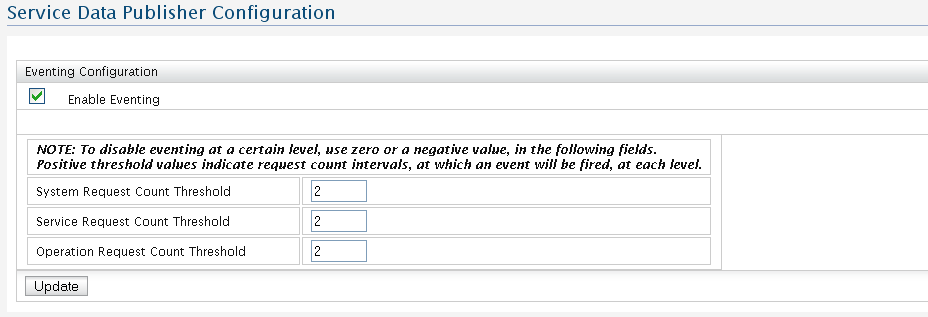

Using this configuration user interface, eventing can be enabled or disabled at global level, as well as the three threshold values be set. If eventing is disabled, no events will be fired at all. If eventing is enabled, events will be fired based on the threshold values being satisfied. These events will be captured by BAM server and datas will be saved at the BAM database.
The key three threshold values, which user need to set, are:

Figure 1: Data Publisher Configuration
System request count threshold
An event will be fired with system wide data, when the difference between the system request count at which the last event was fired and the current system request count becomes greater than this threshold value. The system here refers to the WSO2 WSAS instance with which the service data publisher is deployed.
Service request count threshold
An event will be fired with service data, when the difference between the request count for a service at which the last event was fired for the service and the current request count for that service, becomes greater than this threshold value. The threshold value applies to all services hosted with the WSO2 WSAS instance in general. This threshold cannot be configured for individual services to have different values. While this may sound as a limitation, it guards against potential performance hits in checking for the service name and service specific threshold for each service invocation. Hence, it is by design that this threshold is common for all services hosted with a WSO2 WSAS instance.
Operation Request Count Threshold
An event will be fired when the difference between the request count for an operation at which the last event was fired for that operation and the current request count for that operation becomes greater than this threshold value. Like in the case of service request count threshold, operation request count threshold is common for all operations of all services, and cannot be configured to have different values for individual operations.
All the threshold values are set to '2' by default. User could change the threshold values based on his need and click 'update' to make system to fire the events in new threshold values.
Note:-